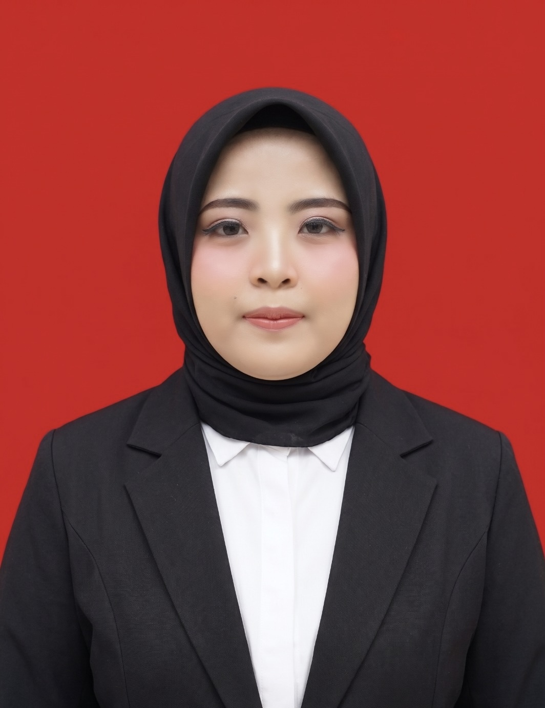
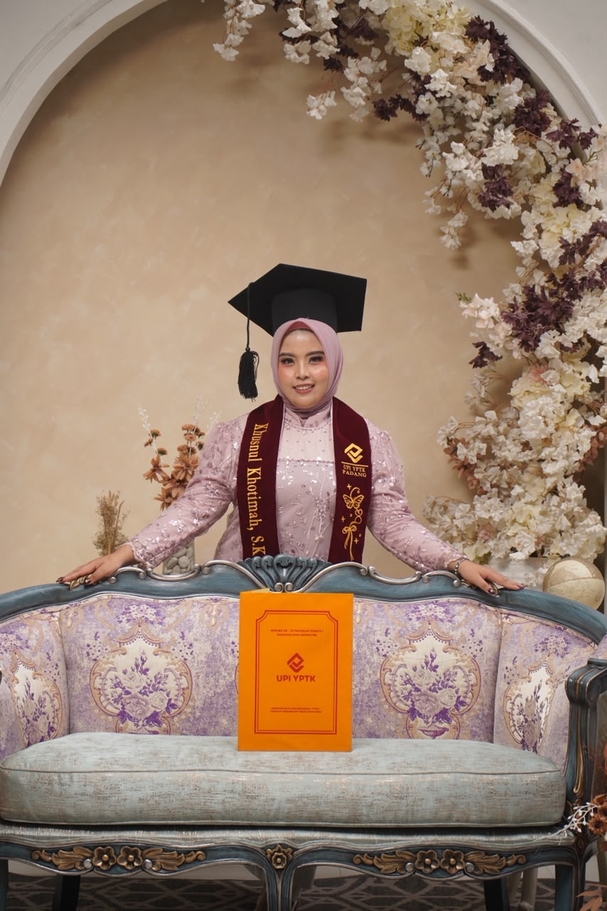
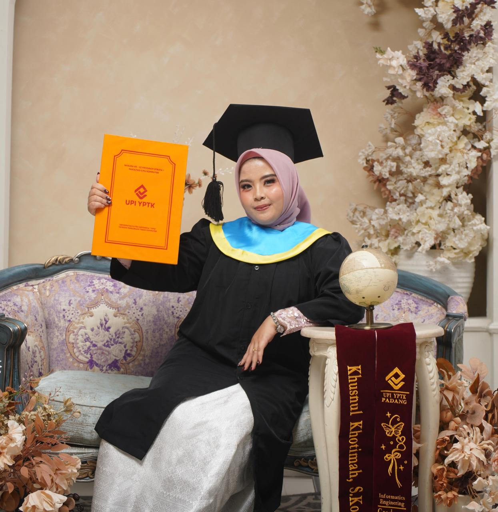
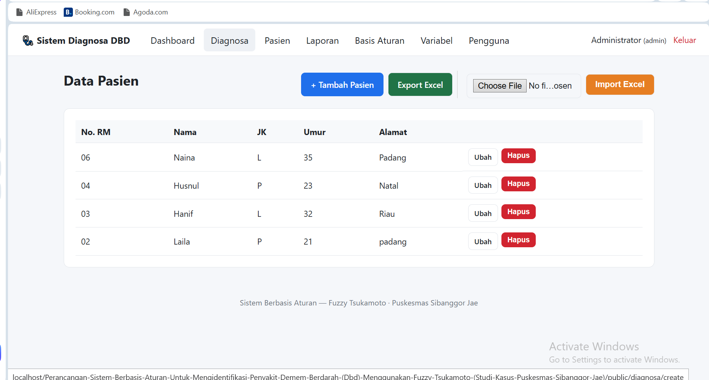
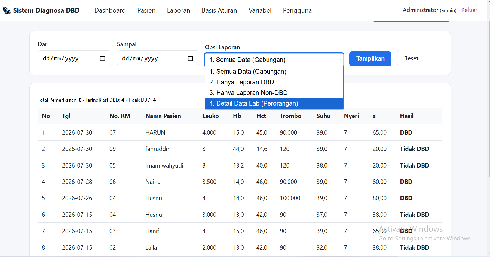

Lulusan Teknik Informatika yang berfokus pada pengembangan sistem pendukung keputusan (Decision Support System), pengolahan data, dan aplikasi berbasis web. Berpengalaman merancang sistem pakar berbasis logika Fuzzy Tsukamoto serta memiliki rekam jejak dalam pengelolaan data di instansi pemerintahan.


Saya adalah seorang Sarjana Komputer dari jurusan Teknik Informatika yang memiliki ketertarikan mendalam pada pengembangan perangkat lunak dan analisis data. Selama masa perkuliahan dan magang, saya terbiasa mengelola basis data, memvalidasi data klinis maupun administrasi publik, serta membangun solusi berbasis web.
Saya berdedikasi tinggi terhadap kerahasiaan dan integritas data, serta memiliki ketelitian dalam mengolah informasi kompleks menjadi sistem yang intuitif dan bermanfaat bagi para penggunanya.
Fokus pada pengembangan sistem pendukung keputusan (Decision Support System), arsitektur web MVC, logika pakar (Fuzzy Logic), dan manajemen basis data.
"Perancangan Sistem Berbasis Aturan untuk Mengidentifikasi Penyakit Demam Berdarah Dengue (DBD) Menggunakan Metode Fuzzy Tsukamoto"

Tampilan antarmuka dari sistem pakar identifikasi DBD berbasis web yang pernah saya buat.
Sistem berbasis web ini dirancang untuk mendiagnosis tingkat risiko penyakit Demam Berdarah Dengue (DBD) berdasarkan input laboratorium pasien (Suhu Tubuh, Trombosit, Leukosit, Hematokrit) menggunakan metode perhitungan Fuzzy Tsukamoto untuk menghitung persentase risiko secara presisi.

Menampilkan formulir input data laboratorium pasien seperti Suhu Tubuh, Trombosit, Leukosit, dan Hematokrit.

Menampilkan luaran persentase kalkulasi risiko DBD hasil pemrosesan metode Fuzzy Tsukamoto.
Kota Padang
Magang Administrasi
Tertarik untuk berdiskusi, bekerja sama, atau memiliki pertanyaan mengenai proyek saya?